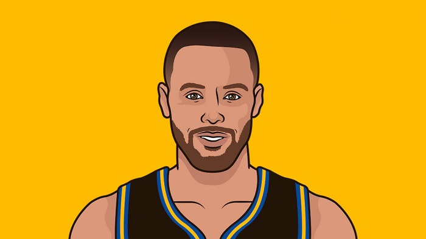
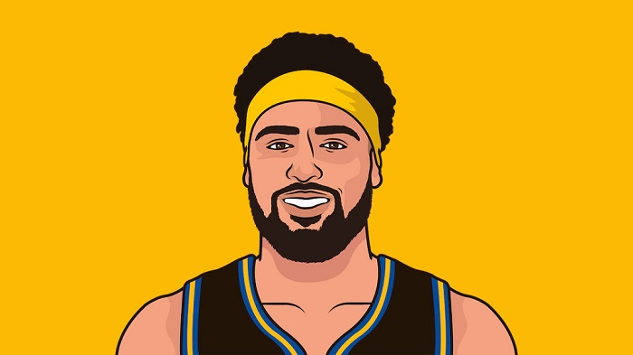
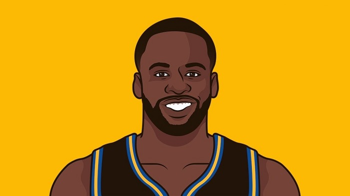

The Golden State Warriors have been around since the NBA's inception. After winning championships in 1947, 1956 and 1975, the team hadn't found much success since. But the team's lucked turned for the better during the 2014 - 2015 NBA Season, when the Warriors would shock the basketball world by winning their first championship in 40 years, sparking a dominant 4 year stretch -- winning two more titles in the process, in what many would consider one, if not THE greatest dynasties in basketball's history. We will take a deep dive into this momentous run, find out just how good they really are, and how they match up against established dynasties of years past.
A Sign Of Things To Come
After having been a lottery team for many years, the Warriors' luck seem to have turned around. In 2010, Joe Lacob and Peter Guber bought the organization for $450 million, signifying the start of something new. The following year, Mark Jackson was annouced as the new head coach. Since taking over the helm, the team has seen significant improvement, making the playoffs in Jackson's 2nd and 3rd year as head coach.
A Major Upgrade
But then, in a shocking turn of events, the Warriors' brass decided to oust Mark Jackson and replace him with Steve Kerr in 2014, even with the team's drastic improvement. The gamble paid off however, as the team went from good to great. With Kerr now leading the charge, the Warriors were able to capture 2 championships in his first 3 years with the team.
The Core Three
The other main component of the team's success? The core three. Lead by Stephen Curry, Klay Thompson and Draymond Green, the team was a force to be reckoned with. Through changes in the supporting casts and at one point even adding another bonafide superstar in Kevin Durant, these three remained constant as the core that drove the Warriors to heights no one even dared to imagine years ago.

Wardell Stephen Curry II, known as the greatest shooter the game has ever seen. An 8x All-Star and 2x MVP, the first one to win the award UNANIMOUSLY. He also holds a plethora of three point records, the most recent and most notable one being the record for the most career three pointers made in NBA history. Curry revolutionized (on in other's opinions ruined) the way basketball is played. His shooting coupled with his creativity makes him an elite scorer, and a headache to defend.

Klay Alexander Thompson, the other half of the Splash Brothers, also regarded as one of the greatest shooters in history. A 5x All-Star, the 2016 Three Point Champion, he is a cerified bucket. He holds the NBA record for most points in a single quarter with 37 AND the NBA Record for most three pointers in a single game with 14! Thompson can also hold it down on the defensive end of the floor, receiving an All Defensive Team honor once for his efforts.

Draymond Jamal Green Sr. The heart and soul of the team, the definition of a warrior. He is the team's vocal leader, not afraid to speak his mind on just about anything. With an high level of basketball IQ, Green backs up all his trashtalk with defense so disruptive, your best player is almost guaranteed to have an off night when he's being defended by him. On offense he is the team's facilitator, in charge of getting the Splash Brothers, and everyone else going.